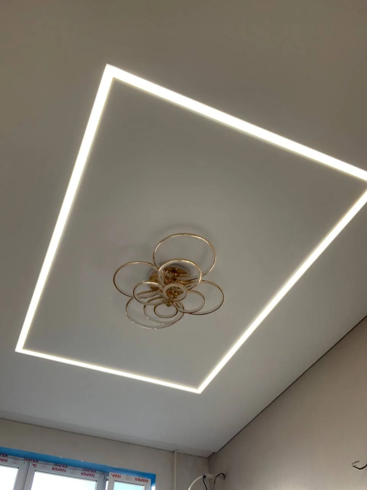
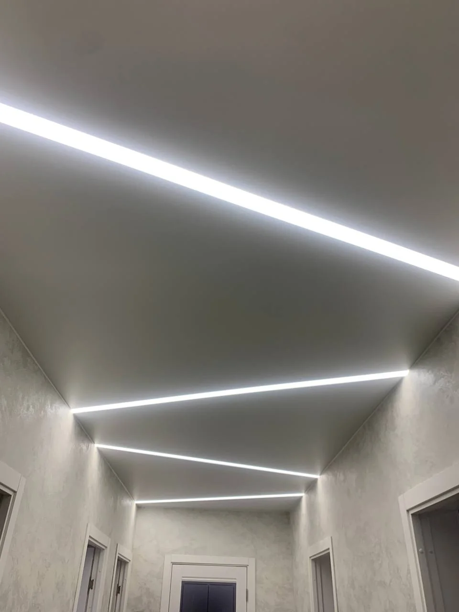
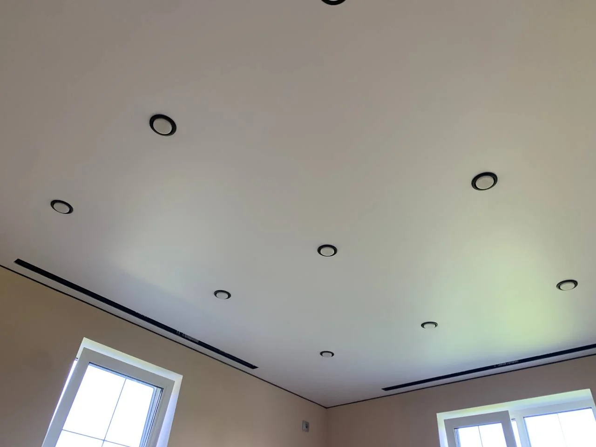
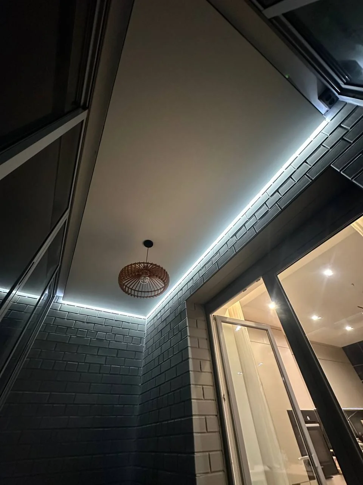
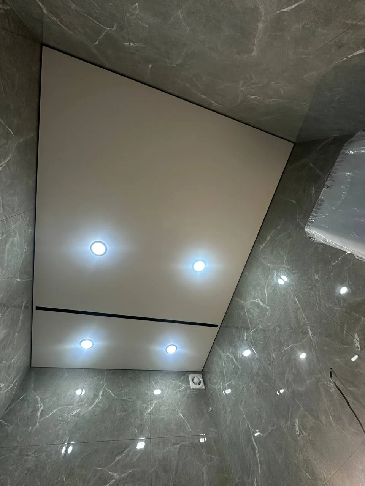
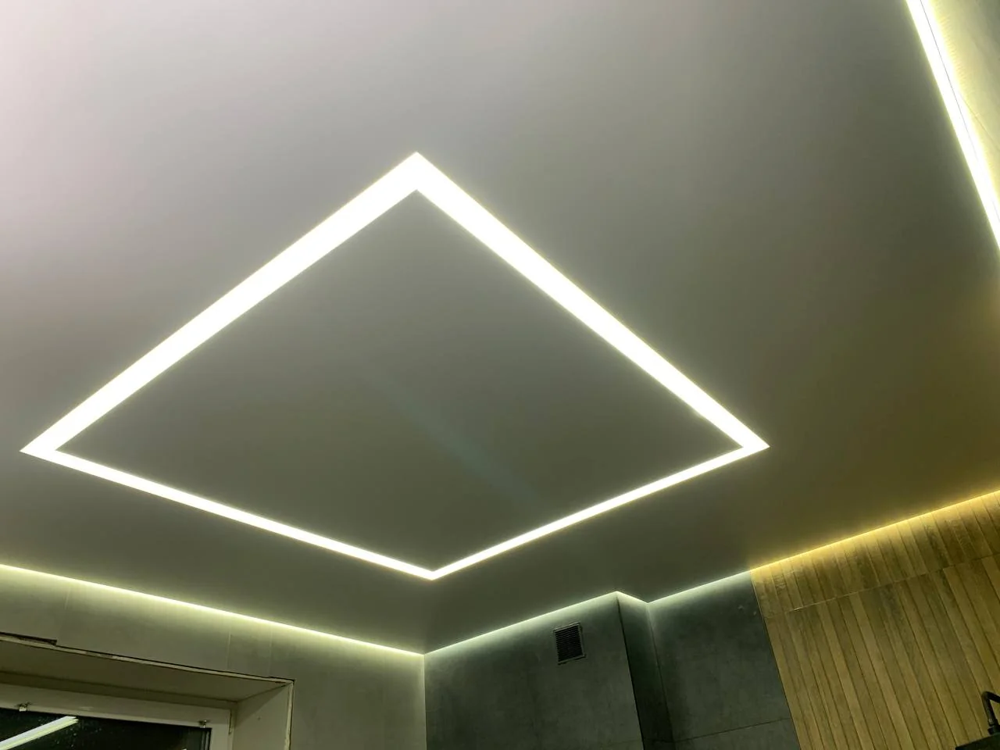

Матовый потолок
Для спальни, гостиной, кухни или коридора, когда важна ровная поверхность без лишних акцентов.

Великий Новгород и область
Я устанавливаю натяжные потолки: от ровного матового полотна до решений со световыми линиями и подсветкой.
Пришлите фото комнаты и размеры — обсудим подходящий вариант.
01 / Мои работы
Здесь фотографии, переданные для портфолио. На снимках — разные задачи: чистая плоскость, теневой зазор и свет, встроенный в потолок.





02 / Решения
Кому-то нужна спокойная ровная поверхность. Кому-то — световая линия или выразительный теневой край. Начинаем с комнаты, а не с модного названия.
Для спальни, гостиной, кухни или коридора, когда важна ровная поверхность без лишних акцентов.
Подбираем расположение света под планировку и то, как вы пользуетесь комнатой.
Аккуратное примыкание к стенам и мягкий свет по контуру для более выразительного интерьера.
03 / Стоимость
На тестовой странице показаны открытые ориентиры за м² из объявлений и местного рынка. Это помогает сравнить задачи, но не заменяет мою смету после замера.
Доступный
от 600 ₽ / м²
Начальный ориентир из моего объявления. Состав материалов и работ уточню для вашей комнаты.
Уточнить состав ↗Средний
около 900 ₽ / м²
Такой ориентир следует из примеров 14 и 18 м² в моём объявлении. Освещение в примерах не включено.
Запросить смету ↗Интерьерный
от 1 100 ₽ / м²
Ориентир по предложению местной компании. Это не мой утверждённый тариф; итог зависит от профиля, света и объёма.
Что входит в цену ↘Важно о расчёте. В моём объявлении указан минимальный заказ 9 500 ₽. Пример 10 м² за 9 000 ₽ там с ним расходится, поэтому точную стоимость конкретной комнаты я подтвержу в переписке и на замере. Светильники, линии, карнизы и сложные примыкания обсуждаются отдельно. Ориентир для теневого решения взят с сайта местной компании М²; это сравнение рынка, а не моя цена.
Ориентиры проверены 06.11.202604 / Порядок работы
Сначала обсуждаем задачу, затем замеряем помещение и согласуем состав работ. Монтаж выполняю по договорённости, с гарантией.
Посмотреть мой профиль Авито ↗Населённый пункт, площадь, фото и пожелания по освещению.
Обсудим полотно, профиль, свет и дополнительные работы.
Фиксируем условия и стоимость до начала работ.
05 / Частые вопросы
По фото и размерам я смогу обсудить вариант и дать предварительный ориентир. Точную смету подготовлю после уточнения деталей и замера.
Напишите ваш населённый пункт. Возможность и стоимость выезда уточню с учётом расстояния и объёма работ.
Состав зависит от выбранного решения. В базовом ориентире нужно отдельно уточнять полотно, профиль, монтаж и свет. Поэтому перед работой согласуем полную смету.
Скачайте PDF-каталог на этой странице или напишите мне на Авито — покажу подходящие примеры для вашей комнаты.
06 / Связаться
Напишите, где находится объект, какая площадь и какой свет вам нравится. Если есть фото комнаты, приложите его в чате Авито.
Написать мне на Авито ↗Другие способы связи
Скачать PDF-каталог